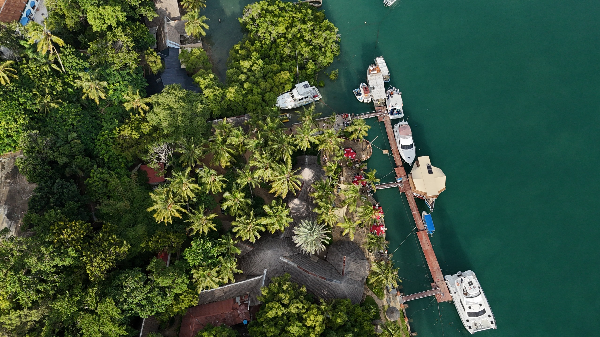
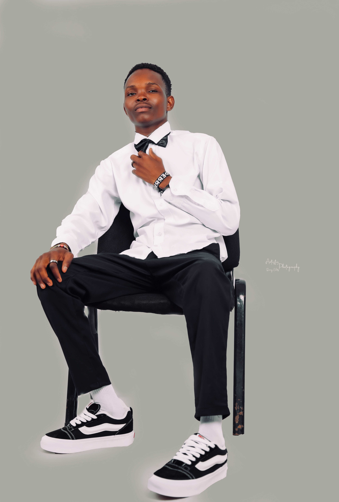
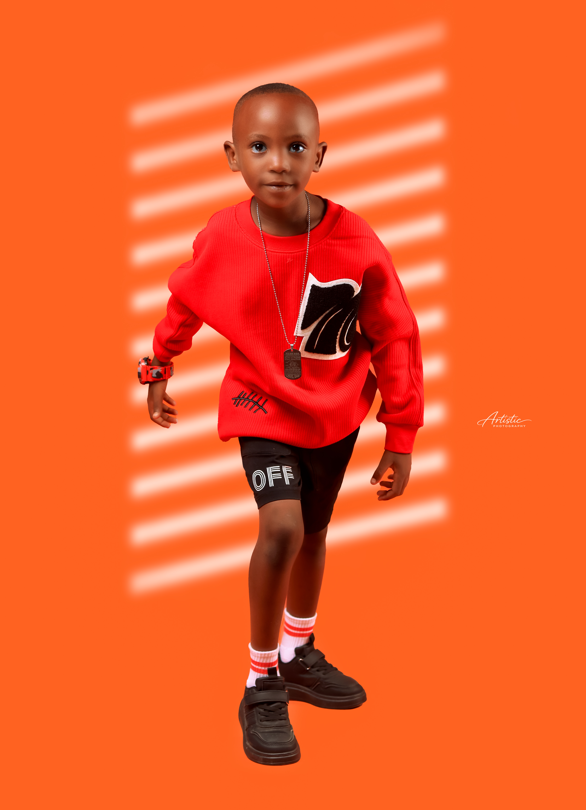
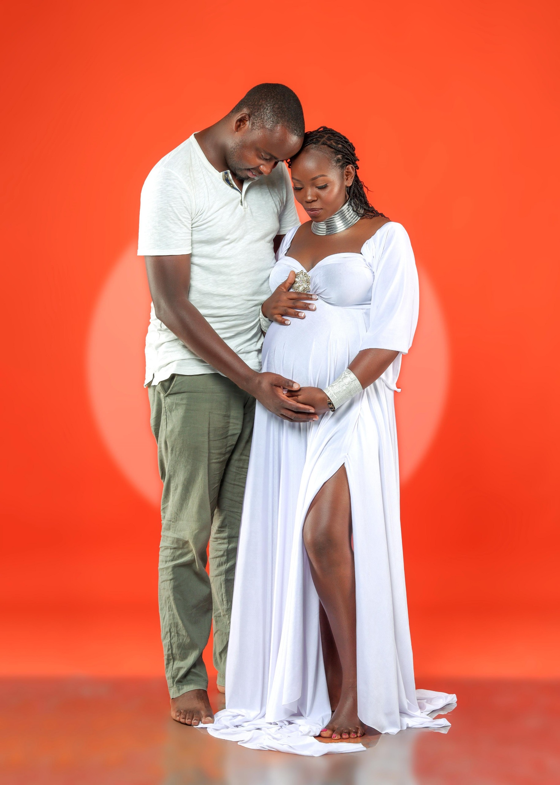
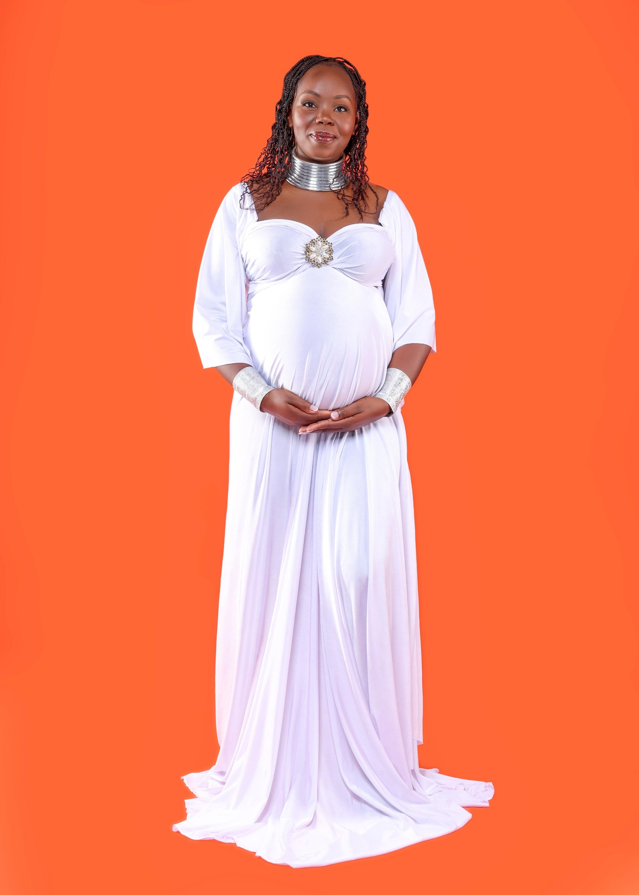
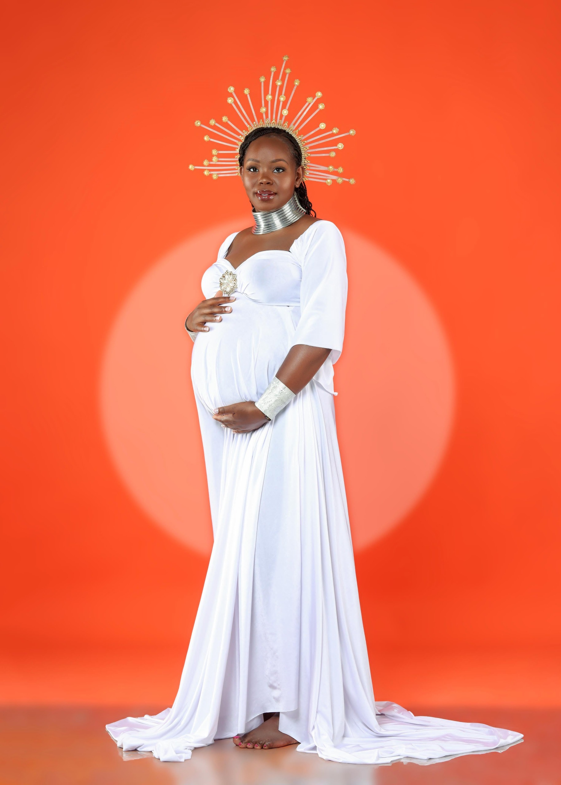
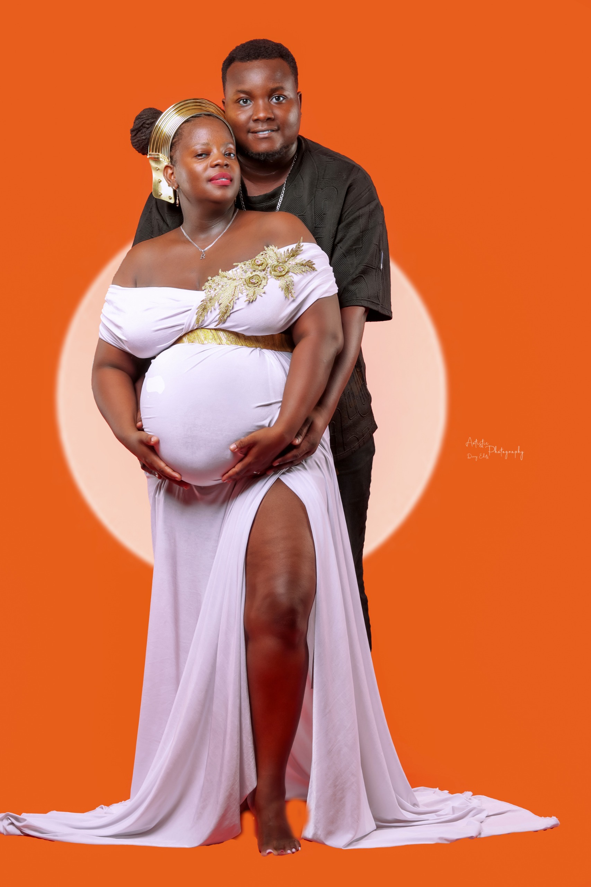
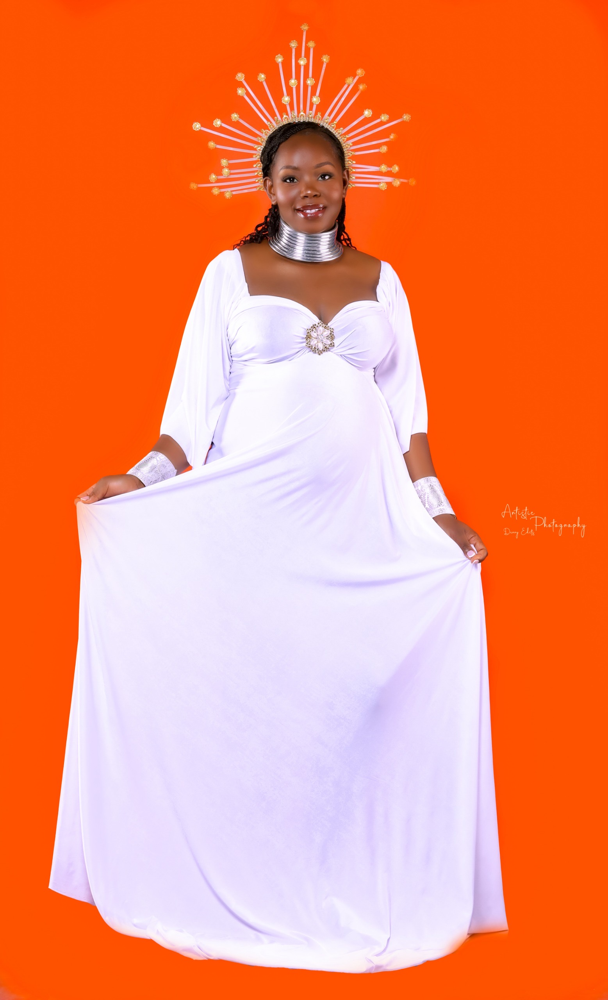

Full Gallery
Stories, portraits, and celebration details.
Browse selected work from weddings, studio sessions, family milestones, and events by Artistic Photography Media.
View Full Photo Album













Like this look?
Send your date, location, and the type of session you need. We will help shape the right coverage.